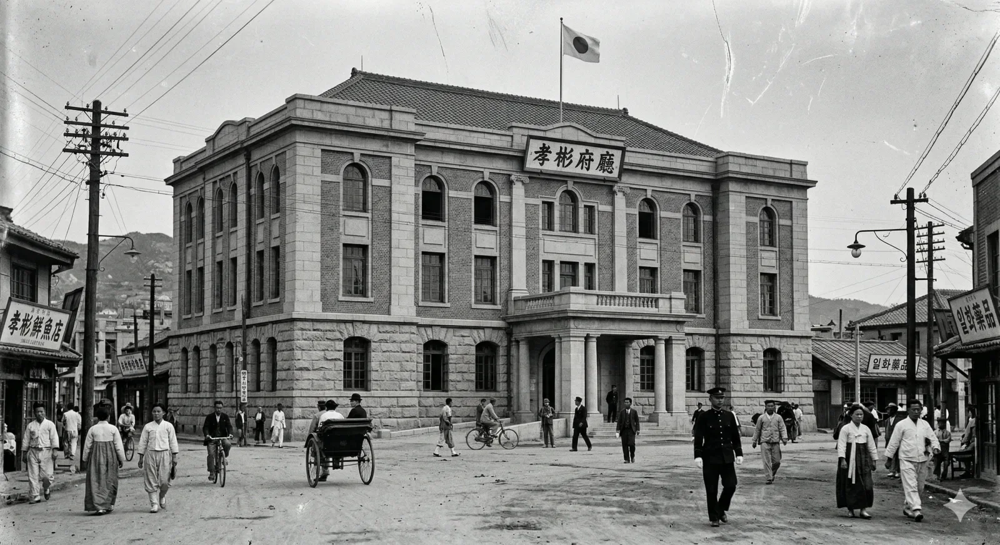
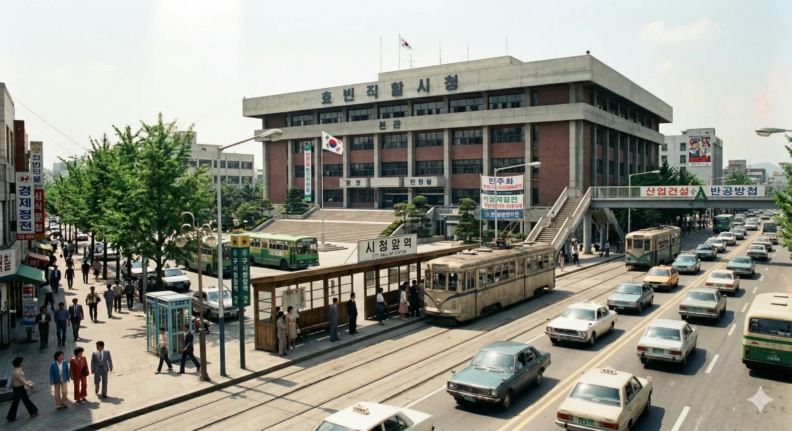
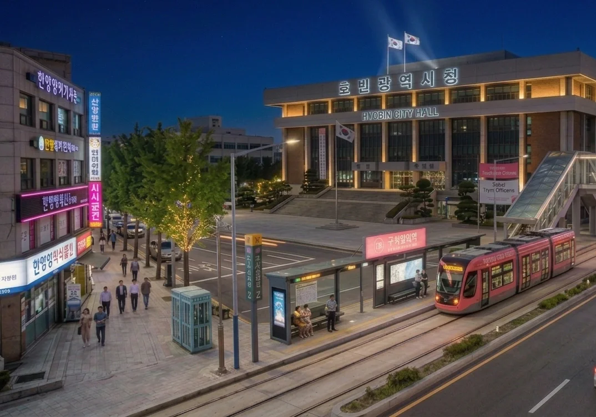

효빈광역시의 행정을 총괄하는 기관이자 그 기관이 입주한 건물. 본관은 26층까지 있으며, 시장실은 9층에 있다.
효빈광역시 북구 효빈로 79(고송동) 소재. 現 청사는 2003년 12월에 완공된 건물이다. 효빈광역시의회와 쌍둥이 건물로 붙어 있어서, 효빈시내 표지판에는 '시청·시의회'로 표시된다.
과거 청사는 중구 중보로 구시청앞역 근처에 있었으나, 2004년 1월 고송동으로 이전하였다. 구 청사는 현재 보존되어 2026년 리모델링 후 타 기관 청사로 쓰일 예정이다. 청사 이전과 동시에 효빈 도시철도 2호선 고송역도 시청역으로 개명되었다.[3]
옆에 시의회가 있다. 또한 인근에 효빈선거관리위원회, 효빈광역시도시공사, 노동청, 통계청, 효빈문화공사, 효빈덕북우정청, 효빈광역시 상수도사업본부 등이 있어서 효빈의 행정 및 상업 중심지라고 할 수 있다. 도시철도 2, 6호선 시청역이 지하도를 통해 시청과 연결돼 있어서 약간 걷긴 해야 하지만 비 오는 날에도 편하게 갈 수 있어 청사 접근성이 매우 좋은 편이다.
겉보기에는 평범한 광역자치단체의 청사처럼 보이지만, 대한민국, 아니 전 세계에서 가장 독특한 행정 문화를 가진 관공서로 평가받는다. 박효빈 시장 취임 이후 서브컬처와 행정의 결합이라는 전례 없는 실험이 성공을 거두며, 시청 자체가 하나의 거대한 성지(聖地)로 변모했다.
청사 내부에서는 점심시간마다 애니메이션 OST가 흘러나오며, 시장실에는 역대급 피규어 컬렉션이 전시되어 있는 등 일반적인 공무원 조직의 통념을 완전히 깨부순 곳이다.
덕분에 매년 행정안전부 주관 '지자체 혁신 평가'에서 업무 효율성과 '조직 문화' 부문 1위를 놓치지 않고 있다.
푸른색 계열의 깔끔한 공무원 제복을 입은 귀여운 이미지를 하고 있다. 성실하고 밝은 표정으로 민원인을 맞이하는 모습이 특징이다. (과거 흑역사 시절 마스코트는 후술)
|
 |
| ▲ 일장기가 걸려있는 효빈부청 시절의 1대 청사 |
|
 |
|
▲ '효빈직할시청' 시절 2대 청사 격동의 현대사가 느껴진다. |
|
 |
|
▲ 청사 이전 후의 모습 7호선 구시청앞역과 신형 트램이 눈에 띈다. |
| ▲ 수변공원 너머로 보이는 압도적인 스케일의 현재 효빈광역시청 |
효빈광역시 역사상 가장 치욕스럽고 고통스러웠던 시기로, 시민들은 이 시기를 "윤대환의 난(亂)" 혹은 "두청강점기"라고 부른다. 단 1년 4개월의 짧은 재임 기간이었지만, 그가 남긴 상흔은 컸다.
윤대환은 "만화는 정신을 썩게 한다"며 모든 문화 행사를 축소했다. 이러한 아버지의 폭력성은 아들 윤재훈에게 그대로 답습되어, 훗날 HAF 난동 사건의 원인이 된다.
| 대수 | 정당 / 임명 주체 | 이름 | 임기 | 비고 |
|---|---|---|---|---|
| 관선 덕빈북도 효빈부윤 / 시장 (1945 ~ 1981) | ||||
| 초대 | 미군정 | 최동석 | 1945.9.2 ~ 1947.1.18 | |
| 2대 | 미군정 / 제1공화국 | 박영진 | 1947.1.19 ~ 1949.8.14 | |
| 3대 | 제1공화국 | 김성수 | 1949.8.15 ~ 1952.4.30 | 효빈시 승격 |
| 4대 | 제1공화국 | 이종학 | 1952.5.1 ~ 1956.8.10 | 지방자치법 시행. 간선제로 뽑혔으나 재임 중 사퇴. |
| 5대 | 1956.8.11 ~ 1958.1.20 | |||
| 6대 | 제1공화국 | 정만호 | 1958.1.21 ~ 1960.5.15 | |
| 7대 | 허정 과도내각 | 윤태일 | 1960.5.16 ~ 1960.11.30 | |
| 8대 | 민주당 | 오세형 | 1960.12.27 ~ 1961.5.24 | 반짝 민선 시장. 5.16 군사정변으로 면직. |
| 9대 | 국가재건최고회의 | 송재우 | 1961.5.25 ~ 1963.12.31 | |
| 10대 | 제3공화국 | 한기철 | 1964.1.1 ~ 1966.2.28 | |
| 11대 | 제3공화국 | 유진상 | 1966.3.1 ~ 1968.4.15 | |
| 12대 | 제3공화국 | 최승호 | 1968.4.16 ~ 1970.7.20 | 효빈전차 존치 협상을 이끌어냄 |
| 13대 | 제3공화국 | 백인규 | 1970.7.21 ~ 1971.8.10 | |
| 14대 | 제3공화국 | 장태민 | 1971.8.11 ~ 1973.6.30 | |
| 15대 | 제4공화국 | 임창수 | 1973.7.1 ~ 1975.11.15 | |
| 16대 | 제4공화국 | 구본영 | 1975.11.16 ~ 1978.2.20 | |
| 17대 | 제4공화국 | 신재호 | 1978.2.21 ~ 1980.5.31 | 청엽구 신설 (1979) |
| 18대 | 제5공화국 | 박동진 | 1980.6.1 ~ 1981.6.30 | 마지막 덕빈북도 산하 효빈시장 |
| 관선 효빈직할시장 (1981 ~ 1995) | ||||
| 초대 | 전두환 정부 | 권태영 | 1981.7.1 ~ 1983.10.15 | 효빈직할시 승격 |
| 2대 | 전두환 정부 | 신동협 | 1983.10.16 ~ 1985.2.24 | 안천시 편입 및 안천구 신설 |
| 3대 | 전두환 정부 | 백승호 | 1985.2.25 ~ 1986.8.28 | |
| 4대 | 전두환 정부 | 서준영 | 1986.8.29 ~ 1988.2.24 | 정권 교체 후 유임 |
| 5대 | 노태우 정부 | 1988.2.25 ~ 1989.12.27 | ||
| 6대 | 노태우 정부 | 남궁혁 | 1989.12.28 ~ 1991.1.9 | 창전구 신설 |
| 7대 | 노태우 정부 | 황기철 | 1991.1.10 ~ 1991.10.24 | |
| 8대 | 노태우 정부 | 유정식 | 1991.10.25 ~ 1992.5.31 | |
| 9대 | 노태우/김영삼 정부 | 환산채 | 1992.6.1 ~ 1993.12.31 | 국회의원직 사퇴 후 부임 |
| 10대 | 김영삼 정부 | 한광수 | 1994.1.1 ~ 1995.6.30 | 마지막 관선 시장. 효빈광역시 개칭 |
| 민선 효빈광역시장 (1995 ~ 현재) | ||||
| 11대 | 민주당 | 환산채 | 1995.7.1 ~ 1998.6.30 | 초대 민선 시장 |
| 12대 | 새정치국민회의 | 박현만 | 1998.7.1 ~ 2002.6.30 | |
| 13대 | 새천년민주당 | 박현만 | 2002.7.1 ~ 2006.6.30 | |
| 14대 | 한나라당 | 윤대환 | 2006.7.1 ~ 2007.11.30 |
공직선거법 위반으로 인한 당선무효 (뇌물수수 및 강요 협박죄, 선거범죄 및 살인미수, 폭행죄, 금품살포죄 및 모욕죄 등) |
| 15대 | 통합민주당 | 박현만 | 2008.6.4 ~ 2010.6.30 | 2008년 상반기 재보궐 선거 (압승으로 복귀) |
| 16대 | 민주당 | 박현만 | 2010.7.1 ~ 2014.6.30 | |
| 17대 | 새정치민주연합 | 김성민 | 2014.7.1 ~ 2018.6.30 | |
| 18대 | 더불어민주당 | 김성민 | 2018.7.1 ~ 2022.6.30 | 2022년 보궐선거 출마를 위해 사퇴 |
| 19대 | 더불어민주당 | 박효빈 | 2022.7.1 ~ 2026.6.30 | 헌정 사상 최연소 광역단체장 |
| 20대 | 더불어민주당 | 박효빈 | 2026.7.1 ~ 재임 중 | 역대 최고 득표율(76.79%)로 재선 성공 |
행정부시장은 행정안전부 파견, 미래혁신부시장은 주로 시장 인맥이나 내부 승진으로 채워진다.
박효빈 시장이 신설한 청년 시정 참여 프로그램. 선발 기준이 특정 분야에 대한 깊은 열정(오타쿠 기질)이다. '탕쿠쿠 홀더 폭행 사건'의 피해자이자 사건을 공론화한 이 주무관이 1기 출신이다.
"이 버스는 효빈역을 출발하여 누마즈... 아, 아니 남구 해안도로로 향합니다. 요우소로!"
-- T03 노선 안내방송 (CV. 사이토 슈카)
전국 유일 지자체 공식 이타샤(Itasha) 버스. 슬로건은 "Dream on the Bus". 수익금 전액은 청소년 교통비 무료화 재원으로 사용된다.
2022년 6월, 효빈광역시청 공식 예산 지원 및 초청대행사 주관으로 효빈대 베르데 홀에서 열린 『니지가사키 학원 스쿨 아이돌 동호회』 성우 마에다 카오리(오사카 시즈쿠 역)와 사가라 마유(나카스 카스미 역)의 토크쇼 도중, 윤재훈과 추종자 A씨가 교내 트램 선로에 뛰어들어 급제동 참사 위기를 일으킨 뒤 행사장 내부까지 난입해 등신대를 부수려 돌진했다. 당시 현장에 있던 박효빈 시장과 시청 공무원들, 팬덤은 일제히 일본어로 "메카쿠시테(目隠して / 눈 가려)!!"라고 외치며 거대한 '인간 벽'을 세워 성우들의 시야를 차단했다.
그러나... 실제로 마에다 카오리(카오링)와 사가라 마유(마유치)의 실물을 영접해 본 박효빈 시장과 시청 문화체육국 성덕 공무원들 사이에서는 이 '메카쿠시테'를 외친 진짜 이유가 전혀 달랐다는 것이 정설이다(...).
박효빈 시장 & 현장 팬덤의 속마음: "야!! 눈 가려!! 성우님들 놀라실까 봐가 아니라, 저 두 사람은 애니 캐릭터들끼리처럼 실제로도 절친한 데다 서브컬처계 최강의 똘끼(?)와 털털함을 자랑하는 광기 듀오란 말이야!! 저 둘이 난동범이랑 눈 마주치면 그 자리에서 마이크 잡고 윤재훈을 뼈도 못 추리게 신랄하게 극딜 박아서 한일 외교 참사 겸 국제 망신 터진다!! 난동범 목숨 살려주고 시청 외교 품격 지키려면 제발 눈부터 가리고 마이크 꺼!!"
마에다 카오리 (귀국 후 개인 유튜브 하이볼 술먹방 라방 中): "아하하! 여러분, 한국 효빈시 이벤트 때 그 뉴스 보셨어요? 솔직히 말해도 돼? 나 그때 스태프분들이랑 팬분들이 '메카쿠시테!' 외치면서 눈 가려주셨는데, 손가락 틈새로 그 이상한 아저씨들이 바닥에 구르면서 '으아악 살려주세요!' 하고 비명 지르는 거 다 봤거든?! (폭소) 솔직히 나 안 막아주셨으면 마이크 들고 '하아?! 어이, 저 아저씨 술 덜 깼어?! 확 한 대 날려버릴라(お前、ぶっ飛ばすぞ)!!' 하면서 무대 밑으로 뛰어내려 갈 뻔했잖아! 매니저 씨가 필사적으로 말려서 참았지! 근데 그때 1초 만에 거대한 인간 벽을 착! 하고 만들어주신 젊은 시장님(박효빈)이랑 한국 러브라이버분들의 피지컬과 단합력은 진짜 액션 영화 어벤져스 같았어요! 한국 팬덤과 효빈시청의 위력은 진짜 세계 제일이야!! 건배~!!"
사가라 마유 (귀국 후 개인 유튜브 잡담 생방 中): "맞아요~ 카오링이랑 대기실에서 얘기하면서 얼마나 웃었는지 몰라요! 눈은 가렸는데 귀로는 그 난동범 아저씨들이 근육질 팬분들이랑 교수님한테 잡혀서 '팔 꺾여요! 잘못했어요!' 하고 찌질하게 울부짖는 소리가 돌비 서라운드로 다 들렸거든요? (특유의 카스밍 썩소) 진짜 카와이소~(불쌍해라)~ 남의 행복한 축제에 와서 저러고 인생 망치는 거 보면 참 안됐어요 그쵸? 그래도 박효빈 시장님이랑 한국 팬분들이 저희 눈에 더러운 거 안 보이게 해주시겠다고 그렇게 온몸으로 지켜주셔서 얼마나 든든하고 감동했는지 몰라요! 효빈시 최고!"
그렇다. 별명부터가 '어뮤즈의 광견(狂犬)'에 5도 이하의 술은 음료수 취급하는 강철 멘탈 주당 마에다 카오리와, 한국 와서 순대국밥에 새우젓을 들이붓고 마사지 썰을 아저씨처럼 풀며 포커·경마까지 섭렵한 승부사 사가라 마유의 실제 성격을 아는 팬들 입장에서는, 성우들이 상처받을까 봐가 아니라 "저 둘의 입담 봉인이 풀리면 무대 위에서 윤재훈을 사회적으로 도륙 내버려 국제적 방송사고가 난다"는 본능적 위기감 때문에 외친 긴급 재난 회피 기동이었던 것이다(...). 결과적으로 팬들의 기지 덕분에 국제 망신은 막았고, 윤재훈 일당은 성우들의 개인 유튜브 생방송에서 전 세계 오타쿠들에게 박제되어 대차게 조롱당했으며, 한국 팬덤과 효빈시청의 위상은 성우들에게 직접 공인받게 되었다.
하지만 훈훈한 팬덤의 대처와는 별개로, 행사의 공동 주최 측이었던 효빈광역시청과 초청대행사, 그리고 장소를 제공한 효빈대학교 본부는 발칵 뒤집혔다. 시속 40km로 달리는 교내 트램 선로에 윤재훈이 뛰어들어 철도운전학과 4학년 실습생이 손을 덜덜 떨며 비상제동과 모래 뿌리기(샌딩)를 다 써가며 간신히 멈춰 서는 초대형 인명 참사가 날 뻔했고, 행사장 내부까지 테러범들이 무혈입성하는 동안 정작 시 예산으로 고용된 경비원들은 코빼기도 보이지 않았기 때문이다.
결국 사건 직후 시청 감사관실과 주최 측에 불려 온 경비업체 현장 경비단장은 쿠사리를 오지게 먹던 도중, 변명이랍시고 "아니, 솔직히 만화 캐릭터 성우 온다길래... 그냥 씹덕 행사라 보통 행사보다 사람이 적고 작을 줄 알고 경비 배치를 대폭 줄였는데요..."라는 희대의 망언을 내뱉어 기름을 들이부었다(...).
박효빈 시장: (현장에서 직접 인간 벽을 치고 온몸을 던졌던 장본인으로서 이성의 끈이 끊어질 듯 극대노하여 집무실 책상을 내리치며) "뭐라고요?! 씹덕 행사라 작을 줄 알고 경비를 줄여?! 여기가 어느 도시인데 그따위 안일한 소리를 지껄입니까!! 타 도시면 몰라도 여기는 서브컬처 행사에 기본 보통 대형 축제급 인파가 몰리는 효빈광역시입니다! 시청 예산이 지원되고 해외 귀빈이 초청된 공식 외교·문화 축제를 당신 멋대로 난도질해서 학생들과 성우님들을 죽일 뻔해놓고, 지금 그게 변명이라고 입 밖으로 나옵니까?!"
지자체에서 공식 예산을 지원해 유명 연예인이나 해외 아티스트를 초청한 행사와 완벽히 동일한 등급의 관제 행사였음에도, 과업지시서상 30명을 배치하기로 계약해 놓고 고작 8명만 세워둔 채 인건비를 빼돌린 안일한 직무유기 앞에서는 그 어떤 자비도 없었다. 효빈광역시청과 초청대행사는 즉각 법이 허용하는 최대치의 징계와 철퇴를 내리꽂았다.
그런데 경비단장을 탈곡기처럼 털던 시청 감사관실은 경비단장으로부터 "사실 저희도 원래 계약대로 30명을 배치하려 했는데, 효빈시청 문화체육국 문화예술과 배 모 팀장(56세, 지방행정사무관)이 직접 전화해서 '어차피 박효빈 그 어린놈이 하는 오타쿠 장난질 행사니 대충 경비 세워두고 남는 예산은 빼돌려라'고 지시했다"는 충격적인 자백을 받아낸다!
당시는 1996년생(당시 만 25~26세)인 박효빈 시장이 취임한 지 얼마 되지 않았던 시점이었다. 전임인 박현만, 김성민 시장 역시 당선 당시엔 전국 최연소급 광역단체장이긴 했으나 그래도 40대 초중반의 연배가 있었고 감사를 워낙 빡세게 돌렸기에, 배 팀장 같은 구태 관료들은 납작 엎드려 '능구렁이 연기'를 하며 살아남았다. 그러나 자기 아들뻘인 1996년생 박효빈 시장이 아웃라이어 수준으로 당선되자, 배 팀장은 속으로 "어린놈이 완장 차고 세금 낭비하며 나대는 꼴 못 보겠다"며 불만을 품고 고의적인 시정 사보타주(태업)를 저질렀던 것이다. 심지어 부하 주무관들이 "효빈시 서브컬처 인파 화력상 경비를 줄이면 무조건 대형 사고가 난다"며 결사반대했음에도 이를 묵살했는데, 평소 배 팀장의 갑질에 시달리던 주무관들이 이 폭언을 전부 스마트폰으로 녹취해 두었다가 특감 현장에서 그대로 터뜨려버렸다(...).
배 모 팀장 (56세, 5급 사무관): (팔짱을 끼고 다리를 덜덜 떨며 거만하게) "시장님, 솔직히 까놓고 말해서 애들 보는 만화 나부랭이 인형놀이 행사에 세금 수천만 원씩 퍼붓는 거 자체가 전시행정 아닙니까? 사람 몇 명이나 올 줄 알고요! 제가 시 예산 아끼려고 융통성 있게 경비 인원 좀 조정한 겁니다. 윤대환 시장님 때였으면 이런 건 기안도 못 올라왔어요! 내가 공무원 생활을 30년을 했는데, 나이도 어린 친구가 어쩌다 시장 완장 찼다고 어디서 선배 공무원을 범죄자 취급이야?! 내가 지시했다는 증거 있어?! 증거 있냐고!!"
최 주무관 & 정 주무관 (문화예술과 7·8급 실무진): (회의실 문을 박차고 들어와 감사관 테이블 위에 태블릿 PC와 두꺼운 비위 채증 바인더를 내려놓으며) "시장님, 감사관님. 증거 여기 다 있습니다. 저희 주무관들이 경비를 절대 줄이면 안 된다고 수차례 기안을 올렸을 때 배 팀장님이 결재판을 집어던지며 지시하신 녹취 파일 원본과, 평소 직원들에게 사적 심부름·주말 농사 동원·폭언 갑질을 일삼으신 증거, 그리고 빼돌린 경비 예산을 친인척 식당으로 유용하려 한 배임 장부입니다!"
[대회의실 스피커로 울려 퍼진 배 팀장의 실제 육성 녹취]: "야 최 주무관! 이딴 씹덕 행사에 경호비 4천만 원을 다 쓴다고? 미쳤냐? 반으로 깎아! 야, 1996년생 그 새파란 박효빈 어린놈이 시장 완장 차고 나대니까 아주 밑에 놈들까지 기고만장해졌네?! 그 어린놈 나대는 꼴을 내가 두 눈 뜨고 못 보겠다! 이런 작은 행사는 대충 노인네들 몇 명 세워두고 경비해도 돼! 내 말대로 안 줄이면 너 이번 근무평정 최하위(D) 줄 줄 알아!"
박효빈 시장: (석이 나가 머리끝까지 극대노했으나, 욕설 한마디 없이 소름 끼치도록 차갑고 냉정한 목소리로 결재 서류에 서명하며) "감사관. 지방공무원법 제73조의3에 의거하여 문화예술과 배 모 사무관을 이 시간부로 즉각 '직위해제' 조치하십시오. 인사위원회 소집해서 법정 최고 징계인 '파면(罷免)' 및 '해임' 절차를 밟으시고, 오늘 중으로 직무유기·직권남용·업무상배임 혐의로 관할 검찰청에 형사 고발장 접수하십시오."
[특감 종료 후 9층 시장 집무실 — 비서실장과 박효빈 시장의 대화]:
천 비서실장: "시장님, 그런데 참 의아합니다. 김성민 전 시장님이나 박현만 시장님 시절에도 감사를 워낙 빡세게 돌려서 부패 공무원들을 싹 걸러내셨는데, 어째서 저 배 팀장 같은 인간이 지금까지 시청 안에 살아남아 있었을까요?"
박효빈 시장: (찻잔을 내려놓으며 단호하게 고개를 젓고는) "아닙니다, 실장님. 제가 김성민 선배님과 누구보다 가까운 사이라 잘 알잖습니까. 아무리 유능하고 날카로운 시장이라도 2,000명이 넘는 시청 공무원들의 머릿속과 속마음까지 24시간 완벽하게 감시하는 건 신(神)이 와도 불가능합니다. 박현만·김성민 두 선배님도 당선 당시엔 최연소급 단체장이셨지만 그래도 40대 어른이셨으니, 저 배 팀장 같은 교활한 자들은 앞에서는 90도로 허리 굽히며 완벽하게 '충성하는 연기'를 하며 숨어 있었을 겁니다. 그러다 제가 만 26세 아웃라이어로 들어오니까 만만해 보여서 본색을 드러낸 것뿐이죠. 김 선배님 탓이 절대 아닙니다. 오히려 제 발로 기어 나와 꼬리를 밟혀줬으니 감사할 따름이죠."
증거가 산더미처럼 쏟아져 파면이 확정적이었음에도, 끝까지 정신을 못 차린 배 전 팀장은 효빈광역시청 본청 1층 로비 앞에서 『1996년생 어린 시장의 보복 행정 규탄! 직위해제 무효!』라는 피켓을 걸고 박효빈 시장에 대한 인신공격 시위를 벌이는 추태를 부렸다. 심지어 여의도의 김성민 국회의원실에까지 직접 전화를 걸어 "김성민 시장님 계실 때 제가 얼마나 충성했습니까! 저 어린놈이 저를 죽이려 하는데 의원님이 좀 말려주십시오!"라고 징징거렸다.
이 뻔뻔한 전화를 받은 김성민 의원은 이마에 굵은 핏줄이 곤두서며 극대노했으나, 다짜고짜 쌍욕을 박는 대신 의원실 문을 걸어 잠그고 모니터에 자신의 분노 조절용 성물인 '요네메 메이의 올곧은 일러스트'와 1.5배속 '토죠 노조미의 와시와시(わしわし) 루프 짤'을 나란히 띄워놓고 와시와시 감상(?)을 하며 필사적으로 사자후를 억누르고 있었다(...).
김성민 의원 (여의도 의원실): (떨리는 손으로 마우스를 쥐고 모니터 속 요네메 메이의 눈빛과 노조미의 손동작을 번갈아 응시하며 거친 심호흡) "후우... 스읍... 참자, 성민아... 메이 쨩의 눈빛과 노조미 쨩의 와시와시를 보며 이성을 유지해야 한다... 육두문자는 비효율적이야... 후우... 박 보좌관. 효빈시청 감사관실에 내 명의로 정식 공문 보내게. '본 의원이 시장 재임 시절 발생했던 배 사무관의 인사 줄타기 및 감찰 기록 일체를 박효빈 시장 감사관실에 전면 제공하며 엄중 파면을 촉구한다'고 말일세. 감히 내 이름을 팔아 후배 시장을 음해해? 법대로 조용히 묻어버리게."
[같은 시각 효빈광역시청 1층 로비 — 교복 입은 고3 김시연의 등판]:
바로 그날 오후, 야간자율학습 전 행정 서류를 떼러 효빈여고 교복 차림으로 시청 1층 통합민원과 로비를 지나가던 김성민 의원의 차녀 고3 수험생 김시연이 아버지 김성민의 이름을 팔며 박효빈 시장을 욕하는 배 팀장과 정면으로 마주쳤다.
배 전 팀장: (단정한 효빈여고 교복에 명찰을 단 김시연을 보자마자 구원의 동아줄이라도 잡은 듯 달려들며) "어, 어이쿠! 시연 학생! 나 알지? 내가 자네 아버님 김성민 시장님 모시던 배 팀장이야! 지금 저 스물일곱 살짜리 어린 시장놈이 나를 음해해서 자르려 하는데, 자네가 아버님께 전화 좀 해서 나 좀 살려달라고 해줘!"
김시연 (당시 효빈여고 3학년, 만 17세): (발걸음을 멈추고 배 팀장을 돌아보는 순간, 우에하라 아유무를 빼닮은 얼굴에서 눈동자의 하이라이트(안광)가 거짓말처럼 완벽하게 소멸한 '죽은 눈'으로 돌변하며 시청 로비의 온도를 영하로 얼려버림) "배 팀장님... 방금 그 더러운 입으로... 왜 우리 아빠 이름을 방패막이로 쓰시죠...? 본인이 시정 사보타주 저지르고 부하 직원들 괴롭히다 파면당하게 생긴 걸 덮으려고, 왜 우리 아빠를 당신 같은 범죄자의 핑곗거리로 끌어들이냐고요. 그리고... 박효빈 시장님이 1996년생이라 어리다고요? 그 1996년생 시장님이 당신보다 지방재정법, 경비업법, 도시철도 안전운행 규정을 100배는 더 완벽하게 꿰고 계시던데요? 고등학교 정치와법 교과서 기초도 모르는 무능한 50대 공무원이 실력으로 압도당하니까 고작 들고나온 게 '나이 공격' 인신공격 시위인가요...? 한 번만 더 그 입에 우리 아빠 이름 올리거나 박 시장님 시정 훼방 놓으시면... 당신이 저지른 비위 사실 전부 공론장에 한 글자 한 글자 아주 정성스럽게 팩트로 찢어발겨 드릴게요. 알아들으셨죠...? ^^"
당시 현장에 있던 시청 공무원들과 청원경찰들은 "배 팀장이 확성기로 고성방가를 지를 때보다, 교복 입은 고3 김시연 양이 안광 꺼진 죽은 눈으로 나긋나긋하게 팩폭을 꽂아 넣을 때가 100배는 더 공포스러웠다"고 입을 모아 증언했다.
교복 입은 고3 여학생에게 시청 로비 한복판에서 영혼까지 탈곡당하고 도망친 배 전 팀장은, 집에서 소주를 마시다 다시 생각해 보니 너무나 억울하고 분통이 터졌다. 게다가 김시연이 아직 대학 입학 전인 고3 수험생이라는 점을 떠올린 그는, "수능과 수시 원서 접수를 코앞에 둔 고3 계집애를 협박죄로 경찰서에 고소해버리면, 생기부랑 신원조회에 빨간 줄 그어질까 봐 김성민이든 이한선이든 내 앞에 무릎 꿇고 박효빈한테 내 파면 막아주겠다며 합의를 빌겠지!"라는 인간 말종급 잔머리를 굴려 효빈중부경찰서에 김시연을 형법 제283조 협박죄 및 명예훼손으로 정식 고소해버렸다(...).
그리고 이 고소장 접수 소식이 여의도 국회의원회관과 오석동 자택, 그리고 효빈시청 9층 시장실에 전해지는 순간, 와시와시도 메이 쨩도 막지 못한 김성민의 꼭지가 돌아버렸고, 아내 이한선 여사마저 시부야 카논 사건 이상으로 찰진 쌍욕을 섞으며 대폭발했다!
김성민 국회의원 (여의도 의원실): (보좌관으로부터 "배 전 팀장이 고3인 시연 양을 협박죄로 경찰에 정식 고소했다"는 보고를 듣는 순간, 손에 쥐고 있던 몽블랑 만년필이 '빠각!' 소리를 내며 두 동강 나고, 모니터에 켜져 있던 요네메 메이 일러스트와 토죠 노조미 와시와시 짤로도 분노 제어가 완전히 불가능해져 마우스를 집어 던지며 꼭지가 완벽하게 돌아버림) "야, 박 보좌관!! 메이고 와시와시고 다 집어치워!! 지금 저 버러지 같은 배XX가 감히 누구를 건드려?! 고3이야!! 수능이 코앞인 내 막내딸내미라고!! 박효빈 시장 음해하고 내 이름을 팔아먹은 것까지는 공직의 룰대로 쳐내 주는 걸로 끝내려 했더니, 밤새 독서실에서 문제집 풀고 있는 미성년자 내 딸 인생에 빨간 줄을 긋겠다고 고소장을 던져?! 당장 내 자문 변호인단이랑 부장검사 출신 전관들 전원 소집해!! 오늘 일과 시간 내로 효빈지검에 직통으로 '무고죄(형법 제156조)' 구속수사 고소장 때려 박고, 그놈 아파트·차량·퇴직금 계좌까지 단 1원도 못 빼돌리게 전부 가압류 걸어버려!!"
이한선 여사 (오석동 자택 통화): (평소 현실판 미후네 시오리코라 불리며 어떤 위기에도 우아하고 냉정하던 '철혈의 사모님'이었으나, 고3 막내딸 피소 소식을 듣자 과거 자신의 최애 시부야 카논 굿즈를 주민우가 밟아 부쉈을 때처럼 냉정이고 나발이고 이성의 끈이 완전히 끊어져 찻잔을 탁자에 쾅 내리찍으며 살벌한 쌍욕을 시전) "야, 김성민!! 지금 의원실에서 점잖게 소리나 지르고 있을 때야?! 저 개XX가 지금 누구 앞길을 막으려고 지랄발광인데?! 나이 처먹고 지가 일 개판 쳐서 박효빈 시장님한테 파면당한 걸 왜 수능 며칠 남지도 않은 우리 시연이한테 뒤집어씌워?! 저 버러지만도 못한 쉰내 나는 틀딱 새끼가 곱게 늙지 못하고 어디서 고3 애새끼 인생에 빨간 줄을 긋겠다고 고소장을 던져?! 카논 굿즈 발로 밟았던 주민우 새끼보다 더한 인간 말종 쓰레기네 이거!! 변호사님! 점잖게 1억이니 2억이니 계산질하지 마세요! 그 개자식 숨 쉬는 집구석에 당장 빨간 딱지 붙여서 길바닥에 나앉게 만들고, 무고죄로 교도소 독방에 처넣어서 평생 콩밥이나 처먹게 사지를 찢어놓으세요!!"
[다음 날 효빈중부경찰서 대질조사실 — 교복 입은 고3 김시연과 시청 법무담당관실의 확인사살]:
효빈여고 교복을 단정히 입고 수능 특강 정치와법 교재 대신 대법원 판례집을 들고 출석한 김시연은, 다리를 꼬고 앉아 있던 배 전 팀장을 향해 다시금 안광 없는 '죽은 눈'을 켰다.
김시연: "팀장님. 수능 비문학 지문도 팀장님 고소장보단 논리적이겠어요. 대법원 판례상 공직자의 비위 사실에 대한 공익적 비판 예고는 협박죄의 '해악의 고지'에 해당하지 않는다는 건 고3 수험생도 아는 상식인데요. 객관적으로 범죄가 성립하지 않는 줄 뻔히 알면서 수험생인 저를 압박하려고 허위 고소를 하셨으니, 형법 제156조 무고죄(10년 이하의 징역) 구성요건을 본인이 직접 완성해 주셨네요? 아, 그리고 박효빈 시장님께서도 시청 로비 불법 점거 및 공무집행방해 추가 고발장을 방금 경찰서장실로 접수하셨대요. ^^"
수사관: "배 모 씨. 김시연 양에 대한 고소 건은 혐의없음으로 즉각 각하되었고, 방금 법정대리인 김성민 의원님과 이한선 여사님 법률대리인 측에서 접수한 무고죄 맞고소장 및 효빈광역시청 법무담당관실의 추가 고발장, 효빈지검의 긴급 피의자 입건 지휘가 내려왔습니다. 지금부터 무고죄 피의자 신분으로 전환됩니다."
배 전 팀장: (스마트폰으로 전 재산 가압류 통보와 효빈광역시청 인사위원회의 '파면 확정' 문자가 동시에 날아들자 바닥에 무릎을 꿇고 오열하며) "시, 시연 학생!! 박효빈 시장님!! 제가 미쳤었나 봅니다! 고소 당장 취하할 테니까 제발 무고죄랑 가압류만은 살려주십시오!!"
김시연: (차갑게 한 걸음 물러서며 교복을 털어내고) "팀장님, 무고죄는 반의사불벌죄도 친고죄도 아니라 취하하셔도 소용없어요. 저 오늘 저녁에 엄마가 구워주신 장어 먹고 독서실 가서 9월 모의평가 오답 노트 정리해야 하거든요? 감옥에서 콩밥 드시면서 형법 총론이나 처음부터 다시 공부하세요. ^^"
결국 1996년생 시장을 얕잡아보고 시정 사보타주를 벌인 것도 모자라 고3 수험생이던 김시연까지 건드린 배 전 팀장은, 효빈시청 인사위원회의 즉각 파면(연금·퇴직금 반토막) + 김성민·이한선 부부의 전 재산 가압류 및 2억 원 민사 배상 + 직무유기·업무상배임·무고죄 병합 징역 3년 6개월 실형 법정구속이라는 완벽한 파멸을 맞이했다. 이 사건 이후 효빈광역시청 내부에서는 꼰대 문화가 완전히 증발하고 박효빈 시장의 시정 장악력이 100%를 돌파하게 되었다.
윤재훈 잔존 세력이 주장하나, 재정 공시(수익이 지출의 50배) 한 방에 논파당한다. 시민들은 "응~ 재정 자립도 1위~"라며 무시한다.
'덕후들의 꿈의 직장'으로 소문나 경쟁률이 500:1을 돌파했다. 지역 인재 할당제로 진정시키는 중.
"엄마! 저 새가 나 쳐다봐! 무서워!"
민선 4기 윤대환 시절의 마스코트. 돈(Money)을 불리라(Blow)는 뜻이었으나, 시민들은 "돈 내놔라"로 해석했다.